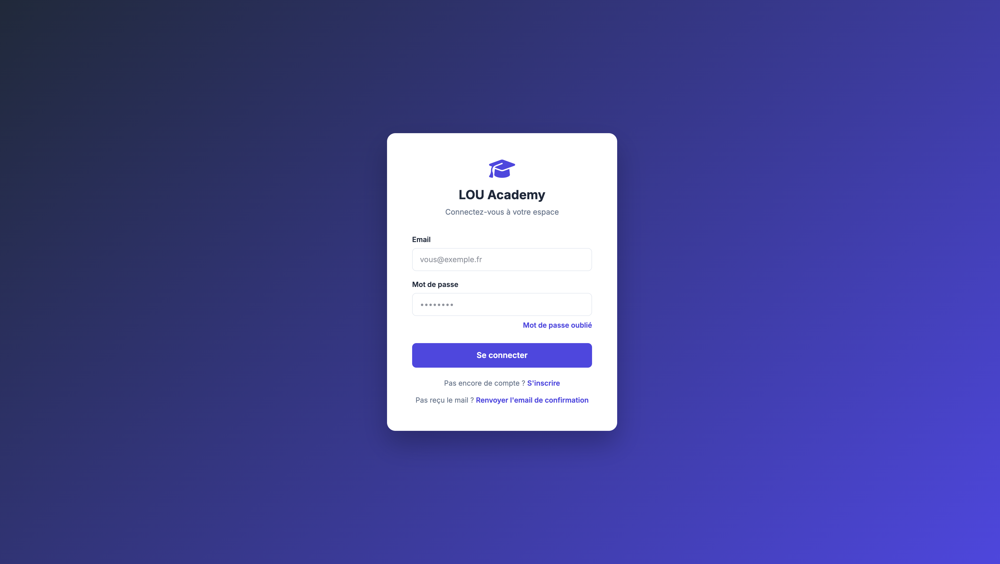

01
Des contenus dispersés
Supports, sessions et inscriptions vivent dans des fichiers séparés. L’accès n’est ni homogène, ni simple à piloter.

Un espace unique pour publier des formations, accompagner les apprenants et attester les parcours.
Les organisations investissent dans le développement des compétences. Elles manquent souvent d’un lieu unique pour diffuser les parcours, voir qui avance, et certifier ce qui a été réellement acquis.
Supports, sessions et inscriptions vivent dans des fichiers séparés. L’accès n’est ni homogène, ni simple à piloter.
Sans suivi de progression, il est difficile de savoir où en sont les collaborateurs, ni ce qui reste à valider.
Concevoir une formation n’est pas la suivre. Les droits doivent séparer apprenants, formateurs et administration.
Sans évaluation ni certificat, la formation reste une activité. Elle ne devient pas une preuve pour l’organisation.
LOU Academy centralise le catalogue, le suivi des parcours et la certification. Chaque profil voit ce qui le concerne — rien de plus.
Six usages, tels qu’ils existent dans la plateforme.
Les formations publiées sont accessibles depuis un espace unique.
Leçons, navigation et progression enregistrée au fil du suivi.
Exercices, dont un éditeur SQL isolé du navigateur, et évaluations avec seuil.
Modules, leçons, contenus et quiz se construisent côté formateur.
Progression, inscriptions et activité restent visibles pour qui en a le droit.
Un document est émis lorsque les conditions de réussite du parcours sont réunies.
Quatre étapes. Aucune installation.

Création du compte et accès à un espace personnel.
Le catalogue et les formations en cours sont disponibles immédiatement.
Leçons, exercices, quiz. La progression est conservée d’une session à l’autre.
Lorsque les critères sont atteints, le certificat PDF est disponible.
Côté formateur : concevoir dans le Course Studio, publier, suivre l’activité. Côté administrateur : gérer les apprenants et les paramètres.
Les formations publiées se retrouvent dans le même catalogue. L’accès ne dépend plus d’une arborescence de fichiers.
Inscriptions, progression et rapports donnent une lecture de l’activité — réservée aux profils habilités.
L’apprenant suit. Le formateur conçoit. L’administrateur pilote. La conception du produit part de cette séparation.
Quiz, exercices et certificat transforment le suivi en preuve, exploitable par l’apprenant comme par l’organisation.
LOU Academy est une réalisation concrète : identifier un besoin de formation, le traduire en parcours, en rôles et en preuves — puis le mettre en production.
Centraliser, suivre et certifier, plutôt que multiplier les canaux.
Des fonctionnalités calées sur des usages : apprenant, formateur, administrateur.
Produit en ligne, conçu et développé avec l’appui d’outils d’intelligence artificielle.